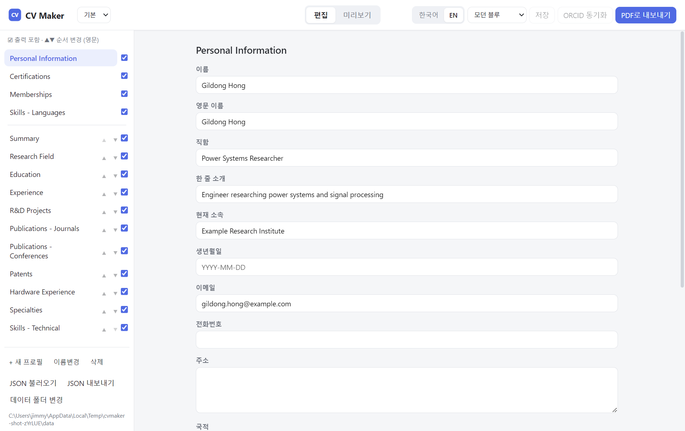
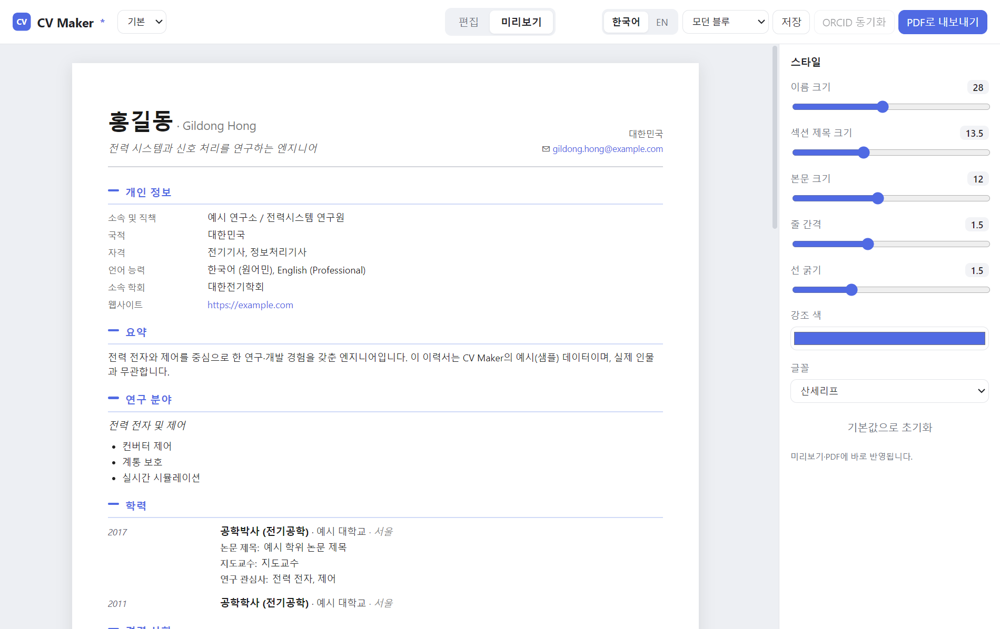

CV Maker 사용 설명서
오프라인 데스크톱 이력서(CV) 편집기 · 한국어 / 영어 이중 관리 · A4 PDF 내보내기
1소개
CV Maker는 한 사람의 이력서를 한국어와 영어 두 벌로 따로 관리하고, 화면에서 본 그대로 A4 PDF로 내보내는 데스크톱 앱입니다.
- 완전 오프라인 — 데이터는 내 컴퓨터의 JSON 파일에 저장됩니다. ORCID 동기화를 쓸 때만 인터넷이 필요합니다.
- 한/영 분리 — 언어 토글 한 번으로 두 이력서를 전환합니다.
- 섹션 표시/숨김·순서 변경, 한글 표 레이아웃.
- 여러 프로필 — 서로 다른 이력서를 드롭다운으로 전환.
- 스타일·테마 — 글씨 크기·선 굵기·강조 색·글꼴, 테마 프리셋.
- ORCID에서 논문·특허를 가져와 최신순 자동 정렬.
2설치와 첫 실행
Windows용으로 두 가지 형태가 제공됩니다.
- 설치 프로그램 (
CV Maker Setup x.y.z.exe) — 실행해 설치합니다. - 포터블 (
CV Maker x.y.z.exe) — 설치 없이 더블클릭으로 바로 실행합니다.
⚠ SmartScreen 경고이 앱은 코드 서명이 없어 처음 실행할 때 “Windows의 PC 보호” 경고가 나올 수 있습니다. 추가 정보 → 실행을 누르면 됩니다.
처음 실행하면 샘플(예시) 이력서가 담긴 “기본” 프로필이 자동으로 만들어집니다.
이 샘플을 지우고 본인 정보를 채우거나, 새 프로필을 만들어 시작하세요.
데이터는 문서\CV_maker\ 폴더에 저장됩니다(→ 13. 데이터 저장 위치).
3화면 한눈에 보기
상단 헤더는 어디서나 보입니다.
- 프로필 드롭다운 — 이력서(프로필) 전환.
- 편집 / 미리보기 탭 — 작성 화면과 결과 화면을 오갑니다.
- 한국어 / EN — 언어 전환.
- 테마 드롭다운 — 모던 블루 / 클래식 모노 / 학술 세리프.
- 저장 · ORCID 동기화 · PDF로 내보내기.
편집 모드
왼쪽에 섹션 목록(표시/순서 조절), 오른쪽에 선택한 섹션의 입력 폼이 있습니다.

미리보기 모드
가운데에 A4 페이지가 실제 출력 모습 그대로 보이고, 오른쪽 스타일 사이드바에서 글씨·색·글꼴을 조절합니다.

4이력서 작성
편집 탭에서 작성합니다. 왼쪽에서 섹션을 고르고 오른쪽 폼에 입력하세요.
- 기본 정보 — 이름·영문 이름·직함·소속·연락처·국적·웹사이트·ORCID·사진 등.
- 요약 / 전문 분야 / 자격증 / 소속 학회 / 연구 분야.
- 경력 · R&D 과제 · 하드웨어 실험 · 학력 · 논문(저널/학회) · 특허 — 여러 항목을 더하는 목록형 섹션.
- 기술 스택 · 언어.
목록형 섹션에서는 항목을 추가 / 삭제하고 ▲ ▼로 순서를 바꿀 수 있습니다. 기본 정보의 사진은 이미지 파일을 골라 넣습니다(언어별로 따로 지정 가능).
자동 저장입력하면 약 1초 뒤 자동으로 저장되고, 창을 닫거나 다른 창으로 넘어갈 때도 저장됩니다.
저장 시 직전 내용을 .bak 파일로 백업합니다. Ctrl+S로 즉시 저장할 수도 있습니다.
5섹션 표시·숨김·순서
편집 모드 왼쪽 목록에서 조절합니다.
- 체크박스 — 체크된 섹션만 미리보기·PDF에 나옵니다. (언어별로 따로 기억됩니다.)
- ▲ ▼ — 큰 섹션들의 출력 순서를 바꿉니다.
- 기본 정보·자격증·소속 학회·언어는 고정되어 순서 변경 대상이 아닙니다.
6언어 전환 (한 / 영)
헤더 오른쪽 한국어 / EN 토글로 전환합니다(기본값은 영어).
- 두 언어는 완전히 독립된 데이터입니다 — 한국어 이력서와 영어 이력서를 따로 채웁니다.
- 섹션 표시/숨김 설정도 언어별로 따로 기억됩니다.
- 편집·미리보기·PDF·JSON 내보내기는 모두 현재 선택된 언어를 대상으로 동작합니다.
7프로필 관리
서로 다른 이력서를 프로필로 나눠 관리합니다. 헤더의 드롭다운으로 전환하고, 편집 화면 왼쪽 아래에서 관리합니다.
- + 새 프로필 — 현재 데이터를 새 이름으로 복제해 만듭니다.
- 이름변경 — 현재 프로필 이름을 바꿉니다(두 언어 파일 함께).
- 삭제 — 현재 프로필을 삭제합니다(마지막 하나는 삭제 불가).
프로필 이름이 파일명이 되므로 \ / : * ? " < > | 문자는 자동 제거되고 60자로 잘립니다.
각 프로필은 <이름>_KR.json / <이름>_EN.json 한 쌍으로 저장됩니다.
8한글 표 레이아웃
한국어일 때, 표를 지원하는 섹션(학력·경력·과제·논문·특허·하드웨어 실험 등) 옆에 표 버튼이 나타납니다. 켜면 그 섹션이 번호 · 내용 · 날짜 3열 표로 출력됩니다.
- 내용이 비어 있는 열(예: 날짜가 전부 없으면)은 자동으로 빠집니다.
- 표 스타일은 한국어 전용이며, 섹션별로 따로 켜고 끌 수 있습니다.
9스타일과 테마
미리보기 모드 오른쪽 스타일 사이드바에서 문서 모양을 조절합니다. 변경은 미리보기와 PDF에 바로 반영됩니다.
- 이름 크기 · 섹션 제목 크기 · 본문 크기 — 글씨 크기(본문 크기는 문서 전체가 비례해 커지고 작아집니다).
- 줄 간격 · 선 굵기.
- 강조 색 — 섹션 제목·링크·구분선의 색.
- 글꼴 — 산세리프 / 세리프.
테마 프리셋
헤더의 테마 드롭다운으로 한 번에 분위기를 바꿉니다.
- 모던 블루 — 파란 강조 + 산세리프(기본값).
- 클래식 모노 — 무채색 강조 + 산세리프.
- 학술 세리프 — 세리프 글꼴의 학술풍.
테마를 고른 뒤 사이드바에서 값을 직접 바꾸면 테마 표시가 “사용자 설정”으로 바뀝니다. 기본값으로 초기화를 누르면 모던 블루 기본값으로 돌아갑니다.
참고스타일·테마 설정은 앱 단위로 저장되어, 같은 컴퓨터에서 다시 열면 그대로 유지됩니다.
10ORCID 동기화
기본 정보에 ORCID ID(0000-0000-0000-0000 형식)를 입력하면 ORCID 동기화 버튼이 활성화됩니다.
누르면 ORCID 공개 데이터에서 저작물을 가져와 현재 언어 이력서에 추가합니다.
- 저널 논문 / 학회 논문 / 특허로 자동 분류해 각 섹션에 넣습니다.
- 제목 기준으로 중복은 건너뜁니다.
- 추가 후 논문·특허를 최신순으로 정렬합니다.
인터넷 필요ORCID 동기화는 인터넷 연결이 있어야 동작합니다(그 외 기능은 오프라인).
11PDF 내보내기
PDF로 내보내기 버튼 또는 Ctrl+P로 저장합니다.
- 미리보기는 A4 페이지 단위로 나뉘며, 화면에서 본 그대로 PDF가 됩니다.
- 각 페이지에 14mm 안쪽 여백이 들어갑니다.
- 파일명은
CV_<이름>_<연도>_<KO|EN>.pdf형태로 제안됩니다(이름은 영문 기준).
12JSON 가져오기·내보내기
다른 컴퓨터로 옮기거나 백업할 때 사용합니다. 현재 언어의 데이터가 대상입니다.
- JSON 내보내기 — 현재 언어 이력서를
<프로필>_KR.json또는<프로필>_EN.json으로 저장. - JSON 불러오기 — 파일을 골라 현재 데이터에 덮어씁니다.
언어는 파일명으로 판별불러올 때 파일명이 ..._KR.json/..._KO.json이면 한국어,
..._EN.json이면 영어로 들어갑니다. 그 외 이름이거나 이력서 형식이 아니면 거부됩니다
(실수로 엉뚱한 언어/파일을 덮어쓰는 것을 막기 위함).
13데이터 저장 위치와 백업
이력서 내용과 앱 설정은 분리되어 저장됩니다.
| 무엇 | 위치 |
|---|---|
| 이력서 데이터(프로필별) | 문서\CV_maker\<프로필>_KR.json, <프로필>_EN.json |
| 앱 설정(활성 프로필·언어·순서·스타일·테마) | %APPDATA%\cv-maker\config.json |
| 자동 백업 | 저장 시 직전 내용을 <파일>.bak으로 보관 |
편집 화면 왼쪽 아래 데이터 폴더 변경으로 저장 폴더를 바꿀 수 있고, Ctrl+Shift+O로 현재 데이터 폴더를 열 수 있습니다.
14키보드 단축키
| 단축키 | 동작 |
|---|---|
| Ctrl+S | 저장 |
| Ctrl+P | PDF로 내보내기 |
| Ctrl+Shift+O | 데이터 폴더 열기 |
| Ctrl+Z / Ctrl+Shift+Z | 실행 취소 / 다시 실행 |
| Ctrl+= / Ctrl+- / Ctrl+0 | 확대 / 축소 / 실제 크기 |
| Ctrl+R | 새로고침 |
| F11 | 전체화면 |
| Ctrl+Q | 종료 |
15문제 해결 (FAQ)
실행할 때 “Windows의 PC 보호” 경고가 떠요
코드 서명이 없는 빌드라 나오는 정상적인 경고입니다. 추가 정보 → 실행을 누르세요.
입력한 내용이 안 보여요 / 사라졌어요
헤더의 프로필 드롭다운과 언어 토글을 확인하세요 — 다른 프로필이나 다른 언어를 보고 있을 수 있습니다.
데이터는 문서\CV_maker\에 남아 있으며, 저장 시 .bak 백업도 만들어집니다.
PDF가 화면과 다르게 나와요
PDF는 미리보기 화면 그대로 출력됩니다. 미리보기에서 페이지 나뉨과 스타일을 먼저 확인한 뒤 내보내세요.
세리프(명조) 글꼴이 적용되지 않아요
세리프 테마/글꼴은 시스템에 설치된 명조 계열 글꼴(예: 바탕, 나눔명조)을 사용합니다. 해당 글꼴이 없으면 기본 글꼴로 대체될 수 있습니다.
데이터를 다른 PC로 옮기고 싶어요
문서\CV_maker\ 폴더의 _KR.json/_EN.json 파일을 그대로 복사하거나,
JSON 내보내기로 내보낸 뒤 새 PC에서 JSON 불러오기로 가져오세요.
CV Maker는 오픈소스(MIT)입니다 · github.com/hj801js/cv-maker